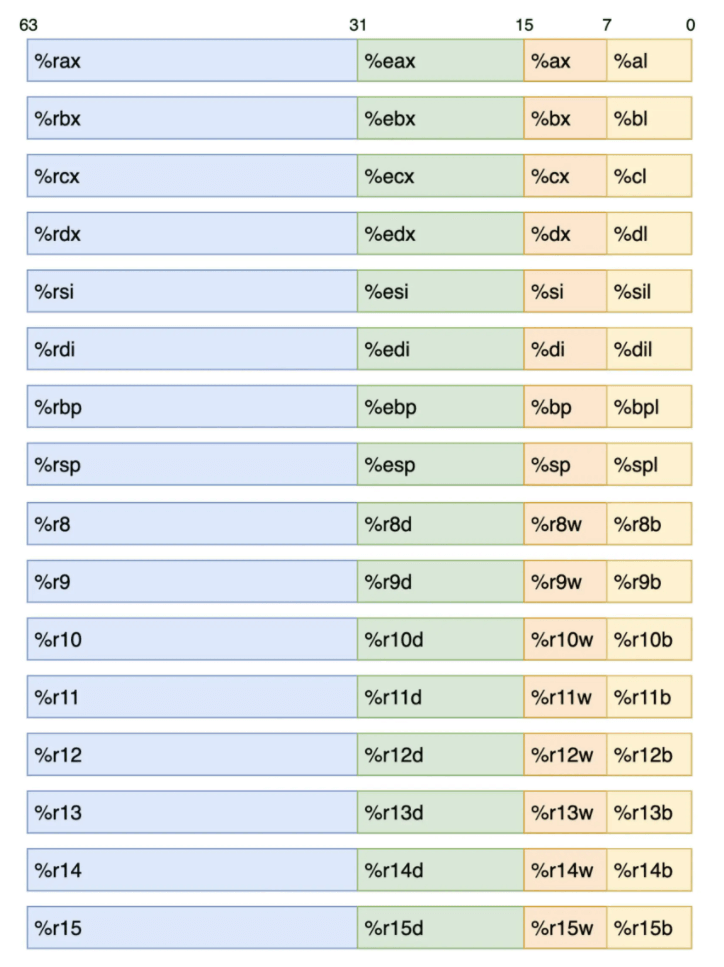
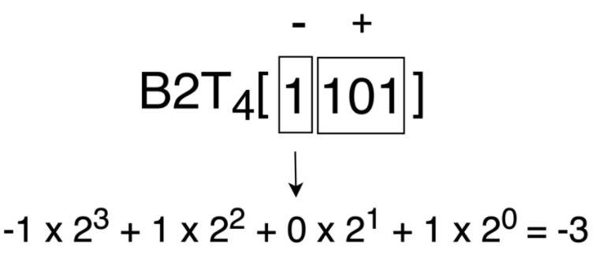
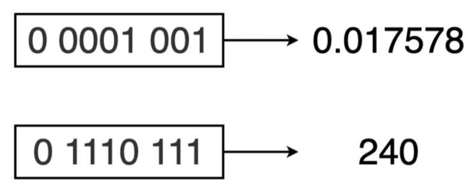
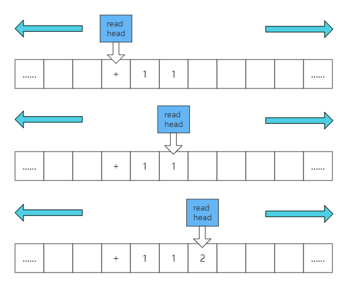
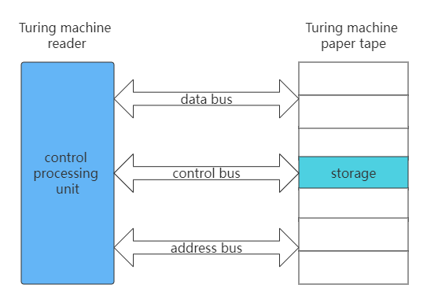
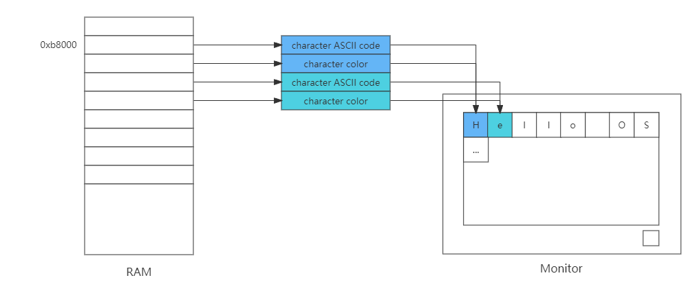

Data unit
A bit is the smallest unit of storage in a computer, and each bit can store a binary code value of 0 or 1.
A byte is usually a storage unit composed of eight bits. In a computer, a byte is the smallest addressable unit, which means that when the CPU uses data, it can assign a corresponding independent address to each byte of memory in bytes.
The size of the word is not fixed. The size of a word may be a power of 2, such as 16-bit, 32-bit, or 12-bit, 27-bit and other uncommon sizes. This is mainly because the concept of word is directly related to the specific processor or hardware architecture, and it is not the same as the more general and unified concept of data volume such as bit and byte.
Words are the natural unit of data used in processor design, and generally, this size is reflected in many aspects of computer architecture and related operations. For example, the capacity of most registers in the processor is the same size as a word. The largest memory block that can be operated by a single instruction of the processor is generally the size of a word, and the address used to specify a specific location in the memory is generally used to process The natural word of the device is width.
Assembly language
In computer programming, assembly language is a low-level programming language, and the instructions used by the language are closely related to the specific platform. This means that assembly languages designed for different CPU architectures cannot be shared and are not portable. Assembly code can be converted by assembler (such as as) to obtain binary executable code. Unlike high-level programming languages, assembly languages have basically no abstractions over machine instructions. Therefore, by observing the assembly code of a program, we can learn about each specific step of the program in detail.
Registers in the instruction set
A register is sometimes called a “register file”, and you can think of it simply as a set of on-chip high-speed memory hardware provided by the CPU that can be used to store data. Typically, registers can be implemented using SRAM. SRAM is a high-speed random access memory, which stores the data of each bit in a corresponding “bistable” memory, thereby maintaining strong anti-interference ability and faster data access speed. In the entire computer architecture, registers have the fastest data access speed and the lowest latency.
Generally speaking, the registers we use in assembly code may not have an exact one-to-one correspondence with the physical registers on the CPU, and the CPU will use additional methods to ensure the dynamic correspondence between them. These registers involved in the program running process can generally be divided into: general purpose registers, status registers, system registers, and AVX and SSE registers used to support floating-point number calculations and SIMD.
Among these registers, general purpose registers are generally used to store temporary data generated during program operation, and these registers can be used as ordinary registers in most cases. In some special cases, they may be used to store information such as instruction calculation results, system call numbers, and memory addresses related to stack frames. The status register is generally used to store status information related to the execution result of the instruction, such as whether the execution of the instruction causes a carry, whether the calculation result is 0, etc. System registers are generally used by the operating system, and these registers describe information related to virtual memory, interrupts, CPU mode, etc.
Under the x86-64 architecture, a total of 16 general-purpose registers are defined in the CPU instruction set architecture (ISA). These registers can store up to 4 words, that is, 64-bit long data. In assembly code, we can use the aliases corresponding to different parts of each register to specifically access their lower 8 bits, lower 16 bits, lower 32 bits, and the full 64 bits of data. For the specific names of these registers, you can refer to the following picture:

Here is an example of the ebx register we encountered before: observing the above figure, we can see that through ebx, we can access data with a size of 32 bits, which is the lower 32 bits of the register rbx. Therefore, the full 64-bit data of this register can be accessed directly using rbx. And using bx and bl, the lower 16 bits and lower 8 bits of the register can be accessed accordingly.
In addition, it should be noted that we can read and write data in different locations of the same register through different register aliases. When an instruction needs to rewrite the lower 16-bit or lower 8-bit data of the register, the data on other bits in the register will not be modified. When the instruction needs to rewrite the data of the lower 32 bits of the register, the data of the upper 32 bits will be reset at the same time, that is, set to zero.
Form of data storage
For most computers, the two’s-complement format is usually used internally to store signed integers, the directly corresponding binary bit format is used to store unsigned integers, and the IEEE-754 standard encoding format is used to store floating point numbers, that is, decimals. In fact, when a computer processes data, it does not distinguish its symbolic nature, which is only reflected in the specific use of computer instructions when operating data.
Two’s-complement
One advantage of using two’s complement to store signed integers is that when the CPU performs addition and subtraction calculations for signed numbers, it does not need to use multiple low-level addition circuits due to the different signs of the addends, which can reduce circuit design. The burden, on the other hand, can also reduce the physical size of the CPU.
The actual value represented by one’s complement is obtained by summing the value of its negative weight bit and the value of the positive weight bit, where the negative weight bit corresponds to the sign bit of the most significant bit (MSB), that is, the binary value of this bit is in Negative values are accumulated during calculation. The remaining bits correspond to the positive weight bits together, that is, the binary values corresponding to these bits are accumulated as positive values during calculation. How exactly should it be calculated? Let’s look at a simple example.
Suppose we have a set of two’s complement “1101”, how should we get its corresponding signed integer value? In order, we first calculate that the value of the negative weight bit corresponding to the complement is -8, and the value of the positive weight bit is 5, so the actual value corresponding to the complement is -3 (-8+5). The specific calculation steps can refer to the following figure (B2T in the figure represents “Binary to Two’s-complement”, that is, “two’s complement”):

When calculating a negative weight bit, its weight should take a negative value, and a positive weight bit should take a positive value. Through the above calculation process, you can clearly see that for a 4-bit complement, what are the maximum and minimum values it can represent. When calculating the maximum value, the symbol position is set to 0, and the other bits are set to 1, and the maximum value that can be represented is 7. When calculating the minimum value, the symbol position is set to 1, and the other bits are set to 0, and the minimum value -8 can be obtained. Negative integer values can represent 1 more range than positive integers, an important feature of all signed integers.
First, let’s calculate the four’s complement corresponding to the signed integer 3, we can get a binary sequence “0011”. Add this binary sequence to the binary sequence 1101 corresponding to the above -3, and the sequence “10000” can be obtained by carrying, which can represent the unsigned positive integer 16.
Therefore, we can conclude that for a non-negative number x, we can use 2w−x to compute the w-bit representation of −x. Applying the above example, we can get “In the case of four’s complement, for the non-negative number 3, the bit pattern of the signed number -3 can be represented by the bit pattern of the unsigned number 13 (ie 16−3)” The conclusion is that the two bit patterns are the same. The English name of complement is a summary of the relationship between x, −x and 2w.
Therefore, the English name of the complement is Two’s-complement, which can be literally translated as “the complement to the number 2”.
IEEE-754
IEEE-754 is a floating-point number standard adopted by many hardware floating-point computing units (FPUs). This standard solves many problems in hardware implementation of floating-point numbers, making it more portable. For IEEE-754, a feature worth introducing is its storage format design for floating-point numbers, so that the computer can simply use the sorting function for integers to sort floating-point numbers.
For example, for a binary sequence of unsigned numbers, the value of 0010 must be less than 1000 (2 < 8). This is fine for a computer to judge. For the 8-bit floating-point numbers (4 order bits, 3 decimal bits) binary sequences 0 0001 001 and 0 1110 111 based on IEEE-754 encoding, it is also very simple to judge the size. Except for the leftmost sign bit, the remaining bits are directly compared as unsigned integer sequence values, and the result is also applicable to the corresponding floating-point number sequence.

Turing machine
The famous Alan Turing. Among his many contributions, a very important one is to propose an ideal machine: the Turing machine. Turing machine is an abstract model, it is like this: there is an infinitely long paper tape, there are infinite small grids on the paper tape, relevant information is written in the small grids, there is a read head on the paper tape, the reading head can Do related operations according to the information in the small grid of the paper tape and can move back and forth. Use the Turing machine to perform the calculation of “1+1=2”. After we define the read head to read “+”, move the read head twice in turn and read the data in the grid. Finally, the read head calculates and writes the result into the first In the next grid of the two data, the whole process is as follows:

This ideal model is good, but an ideal is an ideal after all. To become a reality, we have to think of other ways.
Von Neumann Architecture
Von Neumann proposed that electronic computers use a binary number system and store programs, and execute them in sequence.
A computer constructed according to the von Neumann architecture must have the following functions:
• Loading programs and data into a computer;
• Must have long-term memory of the program, the intermediate results of the data and the final operation results;
• Complete various data processing such as arithmetic, logical operation and data transmission;
• Control the direction of the program according to the needs, and can control the coordinated operation of the various parts of the machine according to the instructions;
• Ability to display processed data results to users as required.
In order to complete the above functions, the computer must have five basic components:
• Input devices for loading data and programs;
• Memory for remembering programs and data;
• Calculator for data processing;
• Controllers that control program execution;
• An output device that displays processing results.
According to von Neumann’s theory, we only need to replace several components of the Turing machine with electronic devices, and we can turn into an electronic computer with the smallest core, as shown in the following figure:

Is it very simple? This time we found that the read head no longer moves back and forth, but relies on the address bus to find the corresponding “paper tape grid”. Reading and writing data is completed by the data bus, and the control of the action is the responsibility of the control bus.
Computer screen
The computer screen display is often the output of the graphics card. There are many forms of graphics cards: the integrated display on the motherboard is called the integrated display, the core display built in the CPU chip, and the independent display connected through the PCIE interface. To display characters on the screen, we need to program the graphics card.
In fact, no matter what graphics card is on our PC, they all support a standard called VESA, which has two working modes: character mode and graphics mode. In order to be compatible with this standard, graphics cards have to provide a firmware program called VGABIOS.
Next, let’s take a look at the details of how the graphics card’s character mode works. It divides the screen into 24 lines, each line has 80 characters, and maps these (24*80) locations to the memory starting at 0xb8000 address, each two bytes corresponds to a character, one of which is the ASCII code of the character , and the other byte is the color value of the character. As shown below:

Understand the working details of the character mode of the graphics card, we can write our own printf function, the code is as follows:
void _strwrite(char* string)
{
char* p_strdst = (char*)(0xb8000);//指向显存的开始地址
while (*string)
{
*p_strdst = *string++;
p_strdst += 2;
}
return;
}
void printf(char* fmt, ...)
{
_strwrite(fmt);
return;
}The code is very simple, the printf function directly calls the _strwrite function, and the _strwrite function sets each character in the string into the video memory starting at address 0xb8000 in turn, and p_strdst adds 2 each time, which is also to skip characters space for color information.